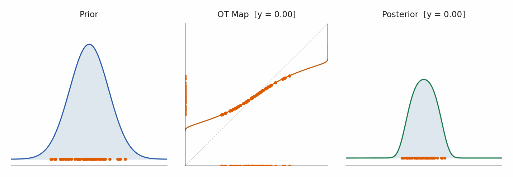
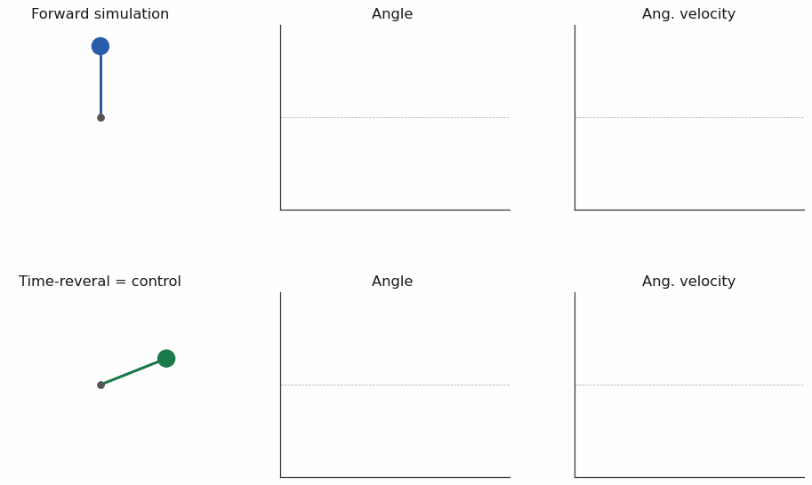

Amirhossein Taghvaei
Assistant Professor · Dept. of Aeronautics & Astronautics · University of Washington Seattle
I am an Assistant Professor in the William E. Boeing Department of Aeronautics & Astronautics at the University of Washington (UW), Seattle. I lead a research group at the intersection of control theory, statistical inference, and machine learning, focused on principled and scalable decision-making under uncertainty. Our work is motivated by applications in aerospace systems, robotics, and environmental monitoring, with the broader goal of developing a unified framework for the control of uncertainty in complex dynamical systems.
Before joining UW, I completed my Ph.D. at the University of Illinois at Urbana-Champaign and was a postdoctoral scholar at the University of California, Irvine, with Prof. Tryphon Georgiou. Check out my Google Scholar for an up-to-date list of publications. I am always looking for motivated Ph.D. students — please reach out if our interests align.
Research
Our research vision is to develop a unified mathematical and computational framework that closes the loop between models, data, and decisions, enabling autonomous systems to reason, sense, and act reliably in uncertain and dynamic environments. Our work is organized around two complementary directions: (i) scalable and principled methods for nonlinear filtering, enabling accurate inference in high-dimensional, nonlinear, and non-Gaussian settings using geometric and variational tools such as optimal transport; and (ii) the interplay of stochastic control and generative modeling, leveraging time-reversal and diffusion-based methods to design control strategies that shape uncertainty at the distributional level. Together, these efforts integrate estimation and control into a coherent framework for decision-making under uncertainty, with the potential to enable safer, more efficient, and more sustainable autonomous systems.


Our research is supported by the National Science Foundation (NSF) grants EPCN-2318977 and EPCN-2347358.